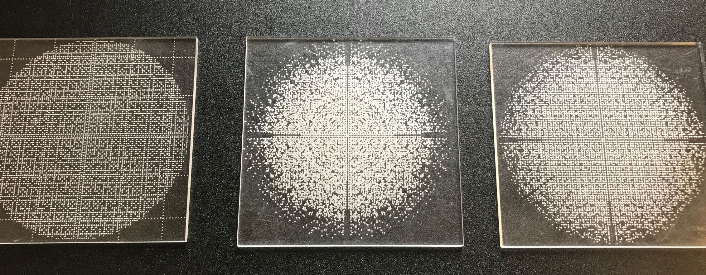

Orbits of Lattice Points Under Hecke Triangle Group Actions
Work of Samantha Kay Fairchild studies the dynamics of Hecke triangle groups, and together with the WXML undergraduate research project Counting k-tuples in discrete sets with students Andrew Lim, Kimberly Bautista, Madeline Brown, they created these wonderful patters of the orbit of the point (1,0) under various group actions. When they asked me to use the laser cutter to put these patterns on acrylic, I was happy to oblige. Also much thanks to Tim Messiket for taking the following photo: